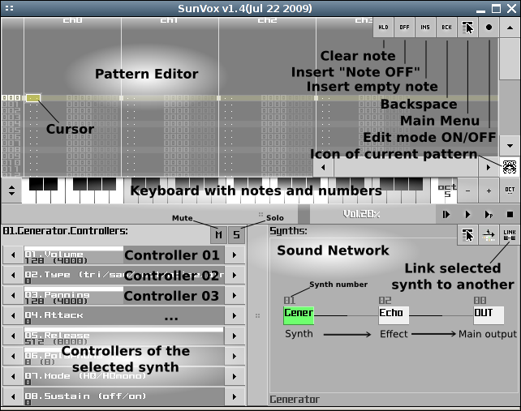
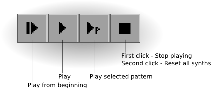

| |
|
|
SunVox - Multiplatform Modular Music Creation Studio
User Manual
Introduction to SunVox
Installation and system requirements
Graphical user interface (GUI) description
Keyboard shortcuts
Synthesizers, filters and effects
SunVox song structure
Pattern editor
Pattern editor: standard effects
Configuration
This manual is not yet complete. But i working on it now. Please send any your comments and issues to nightradio@gmail.com. Thank you for your understanding.
Introduction to SunVox
SunVox is a small, fast and powerful music sequencer (tracker) with modular synthesizers. It is a tool for those people who want to compose music anywhere.
SunVox available for desktop PC (Windows, Linux, Mac OS X), pocket computers (Windows Mobile, PalmOS, iPhone/iPad) and netbooks.
Key features:
- Modular interface.
- Highly optimized synth algorithms.
- Flexible architecture: SunVox can working on variuos devices. For example:
PDA with slow CPU - 16bit sound (fixed point arithmetic); or big PC with
powerfull CPU: 32bit sound (floating point arithmetic).
- Supported platforms: Windows, Linux (x86/x86_64), Mac OS X, PalmOS, WindowsCE (Windows Mobile), iPhone/iPad.
Installation and system requirements
- LINUX
- System requirements:
* Pentium processor or higher;
* 256 mb of RAM or higher;
* Any Linux distribution (x86 or x86_64);
* SDL library (version 1.2 or later);
* ALSA.
- Unpack archive with SunVox.
- Run sunvox.
- WINDOWS
- System requirements:
* Pentium processor or higher;
* 256 mb of RAM or higher.
- Unpack archive with SunVox.
- Run sunvox.exe
- MAC OS X
- System requirements:
* Mac OS X Leopard (10.5) or higher;
* 1 gb of RAM or higher.
- Unpack archive with SunVox.
- Run sunvox.
- WINDOWSCE (WINDOWS MOBILE)
- System requirements:
* ARM CPU (200 mHz or higher).
- Copy sunvox.cab to your mobile device.
- Install it.
- Open Windows start menu -> Programs. Click on SunVox.
- PALMOS
- System requirements:
* ARM CPU (200 mHz or higher);
* PalmOS 5.0 or higher.
- Unpack archive with SunVox.
-
- Install sunvox.prc to Palm.
FOR T|T, T2 and ZIRE71 USERS: Please, install FHR (Fargo Heap Resizer) before SunVox running. FHR page: http://fanoush.wz.cz/palm/fhr.html
- Copy other files (examples, samples) to the flash-card.
- Run sunvox.
Graphical user interface (GUI) description


Keyboard shortcuts
| Keys: | Description:
| | SPACE | - edit mode ON/OFF
| | q,w,e,r,t,y,u,i.... | - playing notes
| | CAPSLOCK or '~' | - note OFF
| | F1...F8 | - set octave number
| | TAB | - go to the next channel
| | SHIFT + TAB | - go to the previous channel
| | CTRL + X | - cut notes (pattern editor)
| | CTRL + C | - copy notes / copy pattern(s) to buffer
| | CTRL + V | - paste notes / paste pattern(s) from buffer
| | CTRL + A | - select all notes / select all patterns
| | CTRL + T | - select track (pattern editor)
| | CTRL + D | - dublicate selected notes / clone pattern(s)
| | CTRL + I | - interpolate value (pattern editor)
| | CTRL + U | - interpolate velocity (pattern editor)
| | CTRL + N | - create a new synth / create a new pattern
| | CTRL + R | - randomize synth controllers (sound network)
| | SHIFT + DELETE | - cut
| | SHIFT + INSERT | - paste
| | SHIFT + '+' | - transpose selected area up
| | SHIFT + '-' | - transpose selected area down
| | SHIFT + UP/DOWN/LEFT/RIGHT | - selection
| | SHIFT + MOUSE MOVING | - synth link/unlink
| | CTRL + O | - load song
| | CTRL + S | - save song
| | CTRL + B | - save song to BACKUP.sunvox
| | F9 | - play
| | F11 | - play pattern
| | F12 | - stop
|
Synthesizers, filters and effects
Some synthesizers has the "Mode" parameter with following possible values:
| 0. HQ | - High Quality (stereo). Linear interpolation
| | 1. HQmono | - High Quality (mono). Linear interpolation
| | 2. LQ | - Low Quality (stereo) for devices with slow CPU
| | 3. LQmono | - Low Quality (mono) for devices with slow CPU
| | 4. Cubic | - High Quality (stereo). Cubic interpolation
|
FM Synthesizer
This synthesizer is based on frequency modulation. It working on internal sampling frequency: 44100 Hz.
Abbreviations: C - carrier; M - modulator.
Controllers:
- C.Volume - carrier volume;
- M.Volume - modulator volume;
- Panning;
- C.Freq mul - carrier frequency multiplier;
- M.Freq mul - modulator frequency multiplier;
- M.Feedback - modulator feedback;
- C.Attack - carrier attack;
- C.Decay - carrier decay;
- C.Sustain - carrier sustain;
- C.Release - carrier release;
- M.Attack - modulator attack;
- M.Decay - modulator decay;
- M.Sustain - modulator sustain;
- M.Release - modulator release;
- M.Scaling - how modulator volume depends on note number;
- Polyphony - how many notes synthesizer can sound at one time;
- Mode:
- 0 - High Quality. Stereo. Linear interpolation of envelopes;
- 1 - High Quality. Mono. Linear interpolation of envelopes;
- 2 - Low Quality. Stereo. No interpolation;
- 3 - Low Quality. Mono. No interpolation.
Generator
This synthesizer is for different waveforms generation.
Available local controllers: Type; Pan.
Controllers:
- Volume;
- Type - type of waveform:
- 0 - triangle;
- 1 - saw;
- 2 - rectangle;
- 3 - white noise;
- 4 - "dirty" wave;
- 5 - sinus.
- Panning;
- Attack;
- Release;
- Polyphony - how many notes synthesizer can sound at one time;
- Mode: HQ/HQmono;
- M.Release - modulator release;
- Sustain: 0 - OFF; 1 - ON;
- Phase modulation: 0 - OFF ... 256 - use input signal for phase modulation;
- Duty cycle (only for rectangular waveform).
Kicker
Available local controllers: Type.
Controllers:
- Volume;
- Type - type of waveform: 0 - triangle; 1 - square;
- Panning;
- Attack;
- Release;
- Vol. Add - additional volume;
- Env. Accel - volume&frequency envelope acceleration;
- Polyphony - how many notes synthesizer can sound at one time;
- Anticlick: 0 - OFF; 1 - ON.
MultiSynth
Translates music events to any number of synths.
Controllers:
- Transpose;
- Random - random frequency change.
Sampler
Supported file formats: WAV, XI, AIFF, RAW.
Available local controllers: Pan.
Controllers:
- Volume;
- Panning;
- Sample interpolation: 0 - OFF; 1 - Linear;
- Volume interpolation: 0 - OFF; 1 - Linear;
- Polyphony - how many notes synthesizer can sound at one time.
SpectraVoice
This synthesizer is based on FFT and can be used for sound generation with different form of spectrum.
Minimal internal sample size: 4096 words. Maximal: 65536 words
Available local controllers: Pan.
Controllers:
- Volume;
- Panning;
- Attack;
- Release;
- Polyphony - how many notes synthesizer can sound at one time;
- Mode: HQ/HQmono/LQ/LQmono/Cubic;
- Sustain: 0 - OFF; 1 - ON;
- Sample size:
- 0 - 4096 words;
- 1 - 8192 words;
- 2 - 16384 words;
- 3 - 32768 words;
- 4 - 65536 words;
- Harmonic - number of harmonic (0 - 15);
- h.freq - harmonic's frequency;
- h.volume - harmonic's amplitude;
- h.bandwidth - harmonic's bandwidth;
- h.bandtype - harmonic's bandtype:
- 0 - half of sinus;
- 1 - square;
- 2 - organ ver.1;
- 3 - organ ver.2;
- 4 - organ ver.3;
- 5 - organ ver.4;
- 6 - sinus.
DC Blocker
DC blocking filter.
Controllers:
- Mono: 0 - stereo; 1 - mono.
Delay
Maximal delay is 1/64 second.
Controllers:
- Dry - amount of original signal in output;
- Wet - amount of delayed signal in output;
- Delay L - delay length on the left channel; maximal delay - 1/64 second;
- Delay R - delay length on the right channel; maximal delay - 1/64 second;
- Volume L - volume of the left channel;
- Volume R - volume of the right channel;
- Mono: 0 - stereo delay; 1 - mono delay;
- Inverse amplitude: 0 - OFF; 1 - ON.
Distortion (and amplifier)
Controllers:
- Volume;
- Type - type of distortion: 0 - limitation; 1 - saturation;
- Power;
- Bitrate: 1..16;
- Frequency: maximum = 44100 Hz (8000 (hex) in pattern editor).
Echo
Maximal delay is one second.
Controllers:
- Dry - amount of original signal in output;
- Wet - amount of signal with echo in output;
- Feedback;
- Delay - delay length; maximal delay - one second;
- Stereo: 0 - mono; 1 - stereo.
EQ
3Band equalizer.
Controllers:
- Low;
- Middle;
- High;
- Mono: 0 - stereo; 1 - mono.
Filter
State Variable Filter (Chamberlin version). Double Sampled.
Controllers:
- Volume;
- Frequency: maximum = 14000 Hz (8000 (hex) in pattern editor);
- Resonance;
- Type:
- 0 - lowpass;
- 1 - highpass;
- 2 - bandpass;
- 3 - notch;
- Response - speed of changing the frequency, resonance and volume;
- Mode:
- 0 - double sampled stereo;
- 1 - double sampled mono;
- 2 - low quality stereo;
- 3 - low quality mono;
- Impulse - frequency, that will be set immediately; after setting frequency will return to its previous value smoothly (according to value of the "Response" controller);
- Mix: minimal value - output=input; maximal value - output=filtered input.
Flanger
Controllers:
- Dry - amount of original signal in output;
- Wet - amount of signal with echo in output;
- Feedback;
- Delay - delay length; maximal delay - 1/64 second;
- Resonance; use low values for smooth delay changing;
- Vibrato speed;
- Vibrato power;
- Vibrato type: 0 - half of sinus; 1 - sinus;
- Set vibrato phase.
LFO
LFO - Low Frequency Oscillation.
Controllers:
- Volume;
- Type: 0 - amplitude modulation (tremolo); 1 - stereo panning modulation;
- Power;
- Frequency;
- Shape: 0 - sinus; 1 - square;
- Set phase.
Loop
This effect is for repeating small pieces of input sound.
Controllers:
- Volume;
- Delay;
- Stereo: 0 - mono; 1 - stereo;
- Repeats - number of repeats in the loop.
Reverb
Reverberator and DC Blocking Filter.
Controllers:
- Dry - amount of original signal in output;
- Wet - amount of reverberation in output;
- Feedback;
- Damp;
- Width;
- Freeze: 0 - none; 1 - freeze mode;
- Mode.
Vocal Filter
This filter was designed to simulate the vocal tract of a human.
Controllers:
- Volume;
- Bandwidth - bandwidth of formants;
- Amp. add - additional value for amplitude of formants;
- Formants - number of voice formants; maximum = 5 (best result);
- Vowel: A...E...I...O...U (minimal value - A; maximal - U);
- Character:
- 0 - soprano;
- 1 - alto;
- 2 - tenor;
- 3 - bass;
- Mono: 0 - Stereo; 1 - Mono.
Vibrato
Controllers:
- Volume;
- Amplitude;
- Frequency;
- Mono: 0 - Stereo; 1 - Mono.
SunVox song structure

Several words about the hex numbers.
In mathematics and computer science, hexadecimal (also base-16, hexa, or hex) is a numeral system with a radix, or base, of 16. It uses sixteen distinct symbols, most often the symbols 0-9 to represent values zero to nine, and A, B, C, D, E, F (or a through f) to represent values ten to fifteen.
Hexadecimal (hex) numbers:
00, 01, 02, 03, 04, 05, 06, 07, 08, 09, 0A, 0B, 0C, 0D, 0E, 0F, 10, 11, 12, 13 ... FF
and their decimal equivalents:
00, 01, 02, 03, 04, 05, 06, 07, 08, 09, 10, 11, 12, 13, 14, 15, 16, 17, 18, 19 ... 255
Pattern editor
Any pattern in the SunVox looks like this:
| line | ch0 (channel 0) | ch1 (channel 1) | ch2 (channel 2) | ...
| | 000 | event | event | event |
| | 001 | event | event | event |
| | xxx | ... | ... | ... |
|
event - some music event (something like a MIDI command).
Examples of events:
| * event of turning note C5 on: | C5 80 01 0000 0000
| | * event of turning note A5 on: | A5 80 01 0000 0000
| | * event of turning note off: | ==
|
As you can see, event contain several text/numeric fields.
Event format: NN VV SS CCEE PPPP
Lets see detailed description of each field in the event:
- NN - note (C0,c0,D0,d0,E0,F0,f0,G0,g0,A0,a0,B0,C1,c1,D1, ... B9);
- VV - velocity (00..80);
- SS - synth number (00,01,02,03,04,05,06,07,08,09, ... FF);
- CC - number of a controller (01,02,03,04, ... FF);
- EE - standard effect:
- 01 - slide up (portamento up; sliding speed = PPPP);
- 02 - slide down (portamento down; sliding speed = PPPP);
- 03 - slide to note (sliding speed = PPPP);
- 08 - arpeggio (PPPP = SSTT; SS - second note increment; TT - third note increment);
- 09 - set sample offset (offset in frames = PPPP * 256);
- 0A - slide velocity up/down (PPPP = UUDD; UU - up speed; DD - down speed);
- 0F - set playing speed (PPPP: 0001..001F - number of ticks per line; 0020..00FF - BPM);
- 19 - re-trigger note after PPPP ticks during the line;
- 1C - cut note after PPPP ticks in the current line;
- 1D - delays the start of note until tick PPPP in the current line;
- PPPP - parameter of a selected effect/controller (0000 - min; 8000 - max).
Velocity can be changed dynamically.
Example:
NN VV SS CCEE PPPP
C3 10 03 0000 0000
-- 20 -- 0000 0000
-- 30 -- 0000 0000
-- 40 -- 0000 0000
-- 50 -- 0000 0000
-- 60 -- 0000 0000
In this example velocity changed from 10 to 60.
Example of changing cutoff frequency (global controller) of filter from min to max value:
NN VV SS CCEE PPPP
-- -- 01 0200 0000
-- -- 01 0200 1000
-- -- 01 0200 2000
-- -- 01 0200 3000
-- -- 01 0200 4000
-- -- 01 0200 5000
-- -- 01 0200 6000
-- -- 01 0200 7000
-- -- 01 0200 8000
Cutoff frequency controller has number 2 in the filter.
Some synths has local controllers.
Local controller can be changed for separate sound on a separate channel.
Example: (changing local controller 2 in synth 1)
NN VV SS CCEE PPPP
C3 80 01 0200 0000 //Set local controller 2 to value 0000. Separate sound begins playing here
-- -- 01 0200 0001 //Set local controller 2 to value 0001
-- -- 01 0200 0002 //Set local controller 2 to value 0002
-- -- 01 0200 0003 //Set local controller 2 to value 0003
-- -- 01 0200 0002 //...
-- -- 01 0200 0001
Pattern editor: standard effects
01 - Slide up (Portamento Up). This effect will slide up the frequency of the synth being played on the channel by PPPP (one note = 40 (hex)) tones for every tick.
If a slide rate is not specified (PPPP is zero) then the last slide rate used on the channel is used again.
02 - Slide down (Portamento Down). This effect will slide down the frequency of the synth being played on the channel by PPPP (one note = 40 (hex)) tones for every tick.
If a slide rate is not specified (PPPP is zero) then the last slide rate used on the channel is used again.
03 - Slide to note. This effect will slide a note being played on a channel to a specified note. The parameter PPPP (one note = 40 (hex)) will states the speed at which a slide will occur.
If a slide rate is not specified (PPPP is zero) then the last slide rate used on the channel is used again.
08 - Arpeggio. This effect is usually used to simulate chords. This can also be used to produce a heavy vibrato.
Here is an example of this effect:
Note = C3; PPPP = 0407 (second note increment = 4; third note increment = 7)
this will attempt to produce a C-major chord. At the beginning of a line
the C3 note is played, then at 1/3 of the way through the line the note
is retriggered at E-3, 2/3 of the way through it is retriggered at G3,
and at the beginning of the next line (if there are no new notes to be
played on the channel), it is retriggered at C3 again.
09 - Set sample offset. This effect allows you to start a sample from a specified position rather
than the normal beginning position. Multiply the value PPPP by 256 to get the position in frames from the beginning of the sample where
playback should start. If no sample is specified with the effect, but one is currently playing on the channel, then the sample currently
playing is retriggered to offset specified.
An example is instrument 2 being played at note C3, with PPPP = 0023 (in hex).
This would make playback of the sample start at offset 0023 * 0100 = 2300. This effect gives a rough range to play the sample from.
0A - Slide velocity up/down. This effect will change the velocity of synth being played on a channel. The value PPPP the speed of the velocity change. Where PPPP = UUDD. If UU is nonzero the velocity is increased, and if DD is nonzero the velocity is decreased.
As an example, take the PPPP to be set to 0003. This means that at the
beginning of the line, the current velocity of the synth is decreased by 3 (because DD = 3).
The velocity is decreased by 3 again for every tick on this line.
0F - Set playing speed. This effect changes the speed (number of ticks per line) of playback. Valid values for speed setting are 1 to 31 (or 1 to 1F in hex). If a value is read that is above 31 (1F in hex), it means to set a modified speed based on beats
per minute, where 4 lines are 1 beat. This means that if you try to set the speed to 42 (2A in hex), this will set 42 beats per minute.
11 - Fineslide up. This effect functions just like effect 1, except that the frequency of the note is only modified once (at the beginning of a line).
12 - Fineslide down. This effect functions just like effect 2, except that the frequency of the note is only modified once (at the beginning of a line).
19 - Re-trigger. Effect 19 allows you to re-trigger a note after PPPP ticks during the line. For example, say note C3 is specified, with PPPP = 2 when the speed (TPL) is currently 6. This would mean that at the beginning of the line the specified note is started, and after two ticks it is restarted. This continues until the beginning of the next line.
1C - Cut. This effect turns off the note after PPPP ticks in the current line.
1D - Delay. This effect delays the start of a note until tick PPPP in the current line. For example, if note C2 is played, with effect 1D and argument PPPP = 3 when the speed is 6. The note C2 will be triggered at the 3rd tick after the start of the line. The purpose of this effect is to delay the start of a sample for a VERY short amount of time.
20 - Note probability. Set the probability PPPP (from 0 to 8000) of a note being triggered. This effect can be used for original unpredictable rhythms.
21 - Note probability with random velocity. Same as effect 20 but with random velocity.
Configuration
SunVox get its configuration from the sunvox_config.ini or sunvox_config.txt file.
This file must be placed in one of the following directories:
- LINUX
- directory with SunVox;
- user home directory (/home/username/);
- WINDOWS
- directory with SunVox;
- directory for application-specific data (/Documents and Settings/username/Application Data/);
- MAC OS X
- directory with SunVox;
- /Users/username/Library/Caches/;
- WINDOWSCE (WINDOWS MOBILE)
- root of local filesystem;
- directory for application-specific data (/Documents and Settings/username/Application Data/);
- PALMOS
Typical sunvox_config.ini file looks like this:
//----------------------------------------------------------------------------
//Commented string. blah blah...
// Screen width and height:
width 640
height 480
// Use this option for setting maximal number of frames per second:
// ( less value - less CPU usage )
//maxfps 30
// Uncomment this option for screen rotate (device dependent):
// ( example of usage: rotate 90 //turn the screen by 90 degrees )
//rotate 90
// Uncomment this option if you want fullscreen mode in Linux (SDL):
//fullscreen
// Uncomment this option if your device has touchscreen without pen (stylus),
// or if you just want a large buttons:
//touchcontrol
// Sound buffer size (in samples):
buffer 4096
// ALSA audio device name in Linux; or audio device number in Windows:
audiodevice hw:0,0
// Sampling frequency (minimum - 44100):
frequency 44100
// Videodriver name on Windows Mobile:
// ( gapi (default); raw (raw hires framebuffer); gdi (compatibility mode) )
videodriver gapi
//----------------------------------------------------------------------------
WARNING: Sound may differ slightly on different sampling frequencies
|
|
| |
|
|
Home
Forum
About the Author
Search
Archive 1997 - 2009
2005: Summerscapes
2005: WarmPlace
2007: Forgotten Pages
2009: BTTS
Gallery 1997 - 2006
Palm Art
Demos
PalmOS
PalmOS nedosound
DOS
VirtualANS
Pixilang
SunVox
Sound Fields
Echoes of destiny (Отзвуки Судьбы) (RU)
Palm Sounds
Malobit.Ru
Software Reviews
FilesLand
Downloadatoz
|
|
{kind=link}